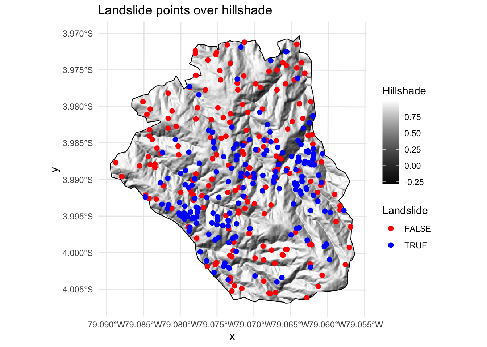
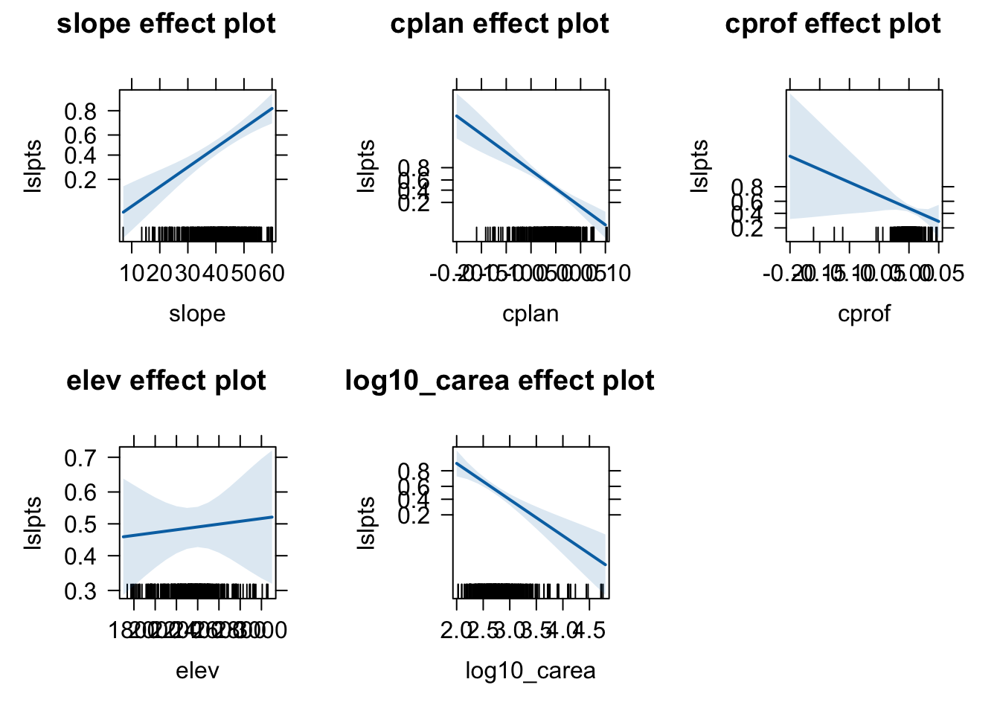
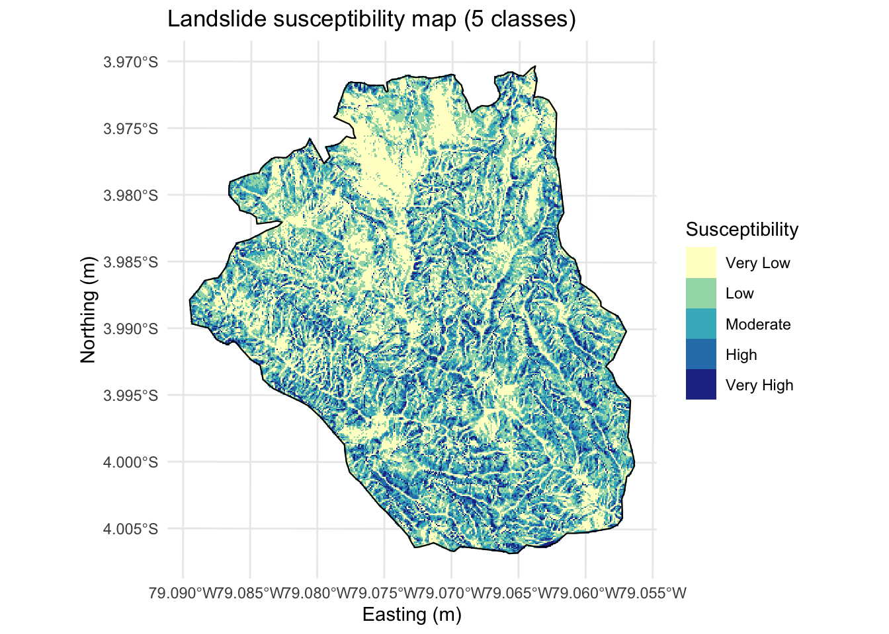
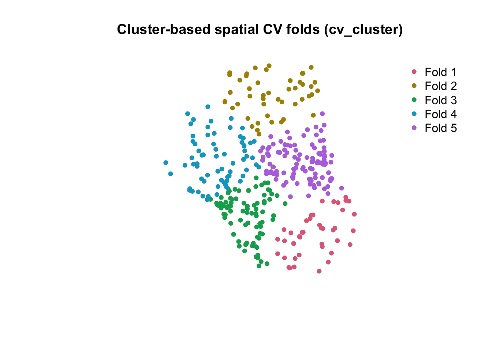
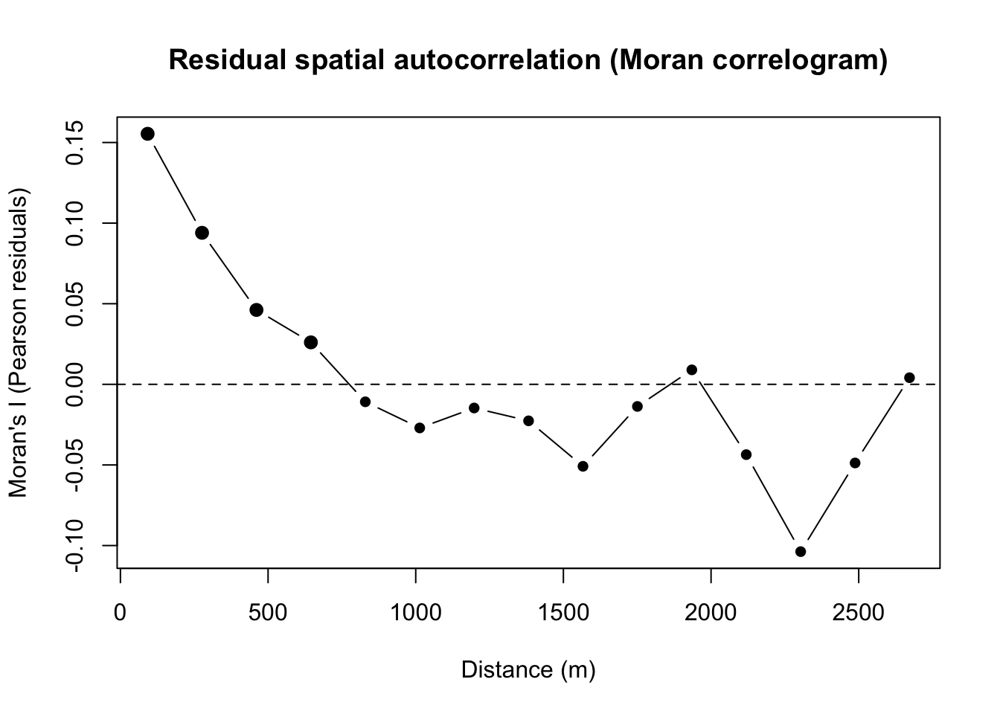
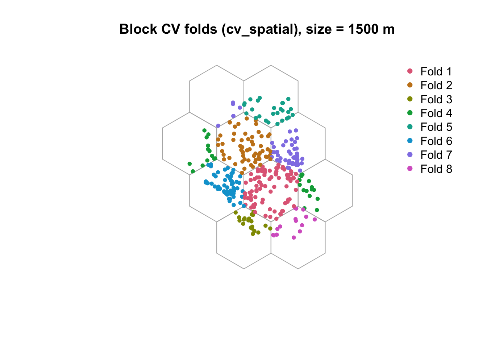

flowchart LR subgraph A["Initial Candidate Models"] direction TB M1["Model 1"] M2["Model 2"] M3["Model 3"] M4["Model 4"] end subgraph B["Refined Models"] direction TB R1["Refined Model A"] R2["Refined Model B"] end subgraph C["Final Selected Model"] direction TB F["Final Model"] end M1 --> R1 M2 --> R1 M3 --> R2 M4 --> R2 R1 --> F R2 --> F flowchart LR subgraph A["Initial Candidate Models"] direction TB M1["Model 1"] M2["Model 2"] M3["Model 3"] M4["Model 4"] end subgraph B["Refined Models"] direction TB R1["Refined Model A"] R2["Refined Model B"] end subgraph C["Final Selected Model"] direction TB F["Final Model"] end M1 --> R1 M2 --> R1 M3 --> R2 M4 --> R2 R1 --> F R2 --> F
LGEO2185: Session 4 – Machine Learning in Geosciences
Note
This session assumes proficiency with geographic data analysis, basic R, for example gained by studying the contents and working through the previous session. A familiarity with geospatial approaches ad spatial modelling is recommended.
Introduction
What Do We Mean by “Spatial Models”?
Spatial modelling spans a continuum: from models that use spatial data to models that explicitly represent spatial dependence, interaction, or physical processes.
- Statistical models that use geographical data (space as data)
- Each grid cell treated as independent
- Examples: GLM, GAM, Random Forest, logistic regression on rasters, ML on spatial data (see further)
- Use spatial predictors, but ignore spatial autocorrelation
- GIS-based models (space as operations)
- Chain spatial tools and map algebra operations
- Examples: weighted overlay, buffering, rule-based suitability models
- No explicit modelling of dependence or uncertainty
- Spatial statistics (space as dependence)
- Explicitly model spatial autocorrelation
- Examples: spatial lag/error models, CAR/SAR, spatial GLMM
- Geostatistics (space as continuous field)
- Assume a spatial covariance structure
- Examples: variogram, kriging, Gaussian processes
- Spatial AI (space as learned pattern)
- Learn spatial structure implicitly from pixel neighborhoods
- Examples: CNNs, U-Net, vision transformers
- Agent-based models (space as interaction environment)
- Agents interact locally in space
- Emergent spatial patterns arise from micro-level decisions
- Examples: land-use change, socio-ecological systems
- Process-based models (space as physical system)
- Mechanistic simulation of spatial processes
- Examples: erosion, hydrology, landscape evolution models
Note
A model becomes truly spatial when it: - Models spatial dependence explicitly - Simulates spatial interactions - Represents spatial processes mechanistically
What is Machine Learning and how does it relate to Artificial Intelligence (AI)?
Artificial Intelligence (AI) refers to technology that simulates (or in some cases exceeds) human behaviour, including:
- Learning
- Comprehension
- Problem solving
- Decision making
- Autonomy
- Creativity
A classical concept in AI is the Turing Test, which states that:
A machine is intelligent if a human cannot reliably distinguish its behaviour from that of a human.
A more modern, data-driven definition (and the one adopted in this course) is:
Artificial Intelligence is the design of algorithms that enable machines to learn patterns from data and use them to perform cognitive tasks such as classification, prediction, and reasoning.
What is Machine Learning?
Machine learning (ML) is a subset of AI focused on creating models by training algorithms to make predictions or decisions based on data. In essence, it can be seen as advanced statistical learning from past observations. ::: callout-note Machine learning enables a machine to automatically learn from data, improve performance from experiences, and predict things without being explicitly programmed :::
Machine learning encompasses a broad range of techniques that allow computers to learn from data without being explicitly programmed. Common examples include:
- Linear regression
- Logistic regression
- Decision trees
- Random forest
- Support vector machines
- k-nearest neighbours
- Clustering methods
Machine learning is commonly divided into:
- Supervised learning, where training data are labelled by humans
- Unsupervised learning, where patterns or labels are inferred automatically
The core objective of machine learning is simple: to learn the mapping between inputs and outputs using training data, so that labels or values can be predicted for new, unseen data.
A useful overview of the relationship between AI, machine learning, deep learning, and generative AI is available here:
What is Deep Learning?
Deep learning is a subset of machine learning that uses multi-layered neural networks to automatically learn hierarchical representations of data.
By stacking many processing layers, deep learning models can capture complex, non-linear relationships and are particularly effective for images, time series, and text.
NLP, LLMs and Generative AI
Natural Language Processing (NLP) is the branch of AI that enables computers to understand, analyze, and manipulate human language (text or speech).
Large Language Models (LLMs) are a modern class of NLP models based on deep learning—typically transformer architectures—trained on vast amounts of text to learn statistical patterns of language. This allows them to perform tasks such as summarization, translation, question answering, and reasoning.
Generative AI refers more broadly to AI systems that can create new content—text, images, code, audio, or video—by learning the underlying structure of data. LLMs are a key example of generative AI when the output is language, while other generative models focus on visual, audio, or multimodal content.
Note
If you want to know more about machine learning and deep learning approaches in geosciences (including hybrid approaches and integration with physically based models) Reichstein, M., Camps-Valls, G., Stevens, B. et al. Deep learning and process understanding for data-driven Earth system science. Nature 566, 195–204 (2019). https://doi.org/10.1038/s41586-019-0912-1
How does Machine Learning work?
1. Why do we validate models?
This session focuses on supervised techniques in which there is a training dataset, as opposed to unsupervised techniques such as clustering. Response variables can be binary (such as landslide or species occurrence), categorical (land use), integer (species richness count) or numeric (soil acidity measured in pH). Supervised techniques model the relationship between such responses and one or more predictors. When we fit a model, a key question is:
How well will it predict new, unseen data?
A model can look excellent on the same data used for training (in-sample), yet perform poorly on new data (overfitting, leakage, or mismatch between training and prediction conditions). Validation is therefore about generalization, not goodness-of-fit.
Common validation strategies
- Apparent performance (“train = test”): this might give an optimistic baseline.
- Hold-out split (e.g., 70/30): a simple approach but potentially noisy (depends on the split).
- k-fold cross-validation (CV): more stable average performance.
- LOOCV (Leave-One-Out CV): extreme form of CV; computationally heavier.
- Spatial CV: required when there is spatial dependence; random CV can overestimate performance for geographic data.
In this session, we will demonstrate these concepts using a case-study.
Primary inputs (for concepts and best practices):
- Geocomputation with R — spatial CV chapter: https://r.geocompx.org/spatial-cv
- Sun et al. (2023) Spatial cross-validation for GeoAI (PDF): https://www.acsu.buffalo.edu/~yhu42/papers/2023_GeoAIHandbook_SpatialCV.pdf
- Rebecca Barter (tuning logic / leakage): https://rebeccabarter.com/blog/2020-03-25_machine_learning#tune-the-parameters
2. Setup tutorial data
The data used in this tutorial is derived from Lovelace et al.: Conceptual explanations in this document are inspired by Geocomputation with R (Lovelace et al.), (https://r.geocompx.org/). Install the following packages:
library(sf)Warning: package 'sf' was built under R version 4.4.3Linking to GEOS 3.13.0, GDAL 3.8.5, PROJ 9.5.1; sf_use_s2() is TRUElibrary(terra)Warning: package 'terra' was built under R version 4.4.3terra 1.8.93library(dplyr)
Attaching package: 'dplyr'The following objects are masked from 'package:terra':
intersect, unionThe following objects are masked from 'package:stats':
filter, lagThe following objects are masked from 'package:base':
intersect, setdiff, setequal, unionlibrary(pROC)Type 'citation("pROC")' for a citation.
Attaching package: 'pROC'The following objects are masked from 'package:stats':
cov, smooth, varlibrary(spDataLarge)
library(effects)Loading required package: carDatalattice theme set by effectsTheme()
See ?effectsTheme for details.library(ggplot2)Warning: package 'ggplot2' was built under R version 4.4.33. Data and first visual exploration
We use the spDataLarge landslide case study (points + raster covariates), frequently used in spatial CV teaching materials. The data is described in detail in @muenchow2012.
data("lsl", "study_mask", package = "spDataLarge")
ta <- terra::rast(system.file("raster/ta.tif", package = "spDataLarge"))
head(lsl) x y lslpts slope cplan cprof elev
1 713887.7 9558537 FALSE 33.75185 0.023180449 0.003193061 2422.810
2 712787.7 9558917 FALSE 39.40821 -0.038638908 -0.017187813 2051.771
3 713407.7 9560307 FALSE 37.45409 -0.013329108 0.009671087 1957.832
4 714887.7 9560237 FALSE 31.49607 0.040931452 0.005888638 1968.621
5 715247.7 9557117 FALSE 44.07456 0.009686948 0.005149810 3007.774
6 714927.7 9560777 FALSE 29.85981 -0.009047707 -0.005738329 1736.887
log10_carea
1 2.784319
2 4.146013
3 3.643556
4 2.268703
5 3.003426
6 3.174073The above code loads a dataframe with the observation point data, a sf object named study_mask and a SpatRaster called ta that contains terrain attribute rasters. Explore this data, you will see that lsl contains the coordinates of observed landslides (ie TRUE in the lslpts columns represents a landslide initiation point). The FALSE observations represent non-landslide points that were sampled randomly from the study area. Use summary(lsl\$lslpts) to explore the dataset. Note that lslpts is a factor (ie 0 or 1).

4. Baseline model: logistic regression (GLM)
We model a binary outcome lslpts with a binomial GLM. A Generalized Linear Model (GLM) extends ordinary linear regression to situations where the response variable is not continuous and normally distributed (see session 3). In our case:
- lslpts is binary
- 1 = landslide occurred
- 0 = no landslide
- We therefore assume a binomial distribution for the response.
We use a logit link function, leading to logistic regression. Binomial GLMs are widely used in geomorphology and hazard mapping because they:
- naturally handle presence/absence data
- produce probabilistic outputs (susceptibility)
- are interpretable (unlike many black-box ML models)
- integrate cleanly with spatial prediction on rasters
You can find more information on logistic regression in landslide susceptibility here @AyalewYamagishi2005. Here, they also serve as a baseline for comparison with ML methods (see further). To model the landslide susceptibility, we need predictors. Usually terrain attributes are good predictors of landsliding. The ‘lsl’ dataframe already has the key terrain attributes for all the observations ready for you. These are:
slope: slope angle (°)cplan: plan curvature (rad m-1)cprof: profile curvature (rad m-1)elev: elevation above sea level (m.a.s.l.)log10_carea: log10 of the catchment area (log10m2).
Note that you could extract these topographic attributes with the help of R-GIS bridges to SAGA, QGIS etc.
In ‘R’, model functions can be specified, we use lslpts ~ slope + cplan + cprof + elev + log10_carea and then fit the logistic regression. It is worth understanding each of the three input arguments:
- A formula, which specifies landslide occurrence (
lslpts) as a function of the predictors - A family, which specifies the type of model, in this case binomial because the response is binary (see
?family) - The data frame which contains the response and the predictors (as columns)
The results of this model can be printed as follows (summary(fit) provides a more detailed account of the results):
form <- lslpts ~ slope + cplan + cprof + elev + log10_carea
fit <- glm(form, family = binomial(), data = lsl)
summary(fit)
Call:
glm(formula = form, family = binomial(), data = lsl)
Coefficients:
Estimate Std. Error z value Pr(>|z|)
(Intercept) 2.511e+00 2.035e+00 1.234 0.217
slope 7.901e-02 1.506e-02 5.248 1.54e-07 ***
cplan -2.894e+01 4.746e+00 -6.098 1.07e-09 ***
cprof -1.756e+01 1.083e+01 -1.622 0.105
elev 1.789e-04 5.492e-04 0.326 0.745
log10_carea -2.275e+00 4.848e-01 -4.692 2.70e-06 ***
---
Signif. codes: 0 '***' 0.001 '**' 0.01 '*' 0.05 '.' 0.1 ' ' 1
(Dispersion parameter for binomial family taken to be 1)
Null deviance: 485.20 on 349 degrees of freedom
Residual deviance: 372.83 on 344 degrees of freedom
AIC: 384.83
Number of Fisher Scoring iterations: 4The binomial GLM indicates that landslide probability increases significantly with slope, confirming the dominant role of terrain steepness. Plan curvature (cplan) and contributing area (log10_carea) show strong negative effects, suggesting lower susceptibility on divergent surfaces and in areas with larger upslope drainage. Profile curvature (cprof) and elevation are not statistically significant once other variables are accounted for. Overall, the reduction in deviance relative to the null model shows that topographic predictors explain a substantial part of landslide occurrence, with slope and curvature being the key controls. The estimated coefficients are expressed in log-odds: a positive estimate means an increase in landslide probability, while a negative estimate indicates a decrease, all else equal. Exponentiating a coefficient gives an odds ratio, quantifying how the odds of a landslide change for a one-unit increase in the predictor. For slope, an estimate of 0.079 means that a one-unit increase in slope increases the log-odds of a landslide by 0.079, all else equal. In terms of odds, this corresponds to an odds ratio of exp(0.079) ≈ 1.08, i.e. about an 8% increase in the odds of a landslide per unit increase in slope. The effect is highly significant, indicating that steeper terrain is consistently associated with higher landslide susceptibility. Because predictors are on different scales, coefficient magnitudes should be interpreted relative to their units or visualized using effect plots rather than compared directly.
Interpret effects (optional)
plot(allEffects(fit))
The effect plots show a strong, monotonic increase in landslide probability with slope, confirming it as the dominant control. Plan curvature (cplan) and contributing area (log10_carea) exhibit clear negative effects, indicating lower susceptibility on divergent terrain and in areas with larger drainage accumulation. Elevation and profile curvature (cprof) show weak or uncertain effects, consistent with their non-significant coefficients in the model.
5. Spatial prediction (susceptibility mapping)
The model object fit (of class glm) contains the coefficients describing the fitted relationship between response and the predictors. It can also be use for prediction. For example, we can predict the landslide probabilities for each of the observed points in the lsldataframe using the generic predictmethod. Setting the type to responsereturns the predicted probabilities (of landslide occurence):
pred_glm = predict(object = fit, type = "response")
head(pred_glm) 1 2 3 4 5 6
0.19010373 0.11718500 0.09519487 0.25030946 0.33819463 0.15754547 This table shows for each of the observed landslides the predicted probability of landslide occurence. Spatial distribution maps can then be made by applying the same approach where we use predictor maps rather than the point observations using the terra:predict()method. We predict probabilities over the raster covariates and display a 5-class susceptibility map.
pred <- terra::predict(ta, model = fit, type = "response")
pred_masked <- mask(pred, study_mask)
breaks <- seq(0, 1, by = 0.2)
labels <- c("Very Low", "Low", "Moderate", "High", "Very High")
pred_class <- classify(pred_masked,
rcl = cbind(breaks[-length(breaks)], breaks[-1], 1:5))
levels(pred_class) <- data.frame(id = 1:5, class = labels)
pred_df <- as.data.frame(pred_class, xy = TRUE)
colnames(pred_df) <- c("x", "y", "class")
#pred_df$class <- factor(pred_df$class, levels = 1:5, labels = labels)
ggplot() +
geom_raster(data = pred_df, aes(x = x, y = y, fill = class)) +
scale_fill_manual(
values = c("Very Low" = "#ffffcc",
"Low" = "#a1dab4",
"Moderate" = "#41b6c4",
"High" = "#2c7fb8",
"Very High"= "#253494"),
name = "Susceptibility"
) +
geom_sf(data = study_mask, fill = NA, color = "black", linewidth = 0.4) +
coord_sf() +
theme_minimal() +
labs(title = "Landslide susceptibility map (5 classes)", x = "Easting (m)", y = "Northing (m)")
Note that here we neglect spatial autocorrelation. It is possible to include spatial autocorrelation structures into models as well as into predictions, but this is beyond the scope of this course (explore regression kriging or mixed-effect modelling approaches).
Note
Spatial distribution mapping is one very important outcome of a model. Even more important is how good the underlying model is at making them since a prediction map is useless if the model’s predictive performance is bad.
6. Model evaluation: apparent AUC (optimistic baseline)
One of the most popular measures to assess the predictive performance of a binomial model is the Area Under the Receiver Operator Characteristic Curve (AUROC). This is a value between 0.5 and 1.0, with 0.5 indicating a model that is no better than random and 1.0 indicating perfect prediction of the two classes. Thus, the higher the AUROC, the better the model’s predictive power. The following code chunk computes the AUROC value of the model with roc(), which takes the response and the predicted values as inputs. auc() returns the area under the curve.
This evaluates on the same data used for training (optimistic but a useful baseline).
auc_full <- pROC::auc(pROC::roc(lsl$lslpts, fitted(fit), quiet = TRUE))
auc_fullArea under the curve: 0.8216Now, that isnt a bad fit! Note however that this is a very optimistic estimation of the model predictions since we have computed it on the complete dataset. In the sections below we address this issue.
7. simple Hold-out split
As a first step beyond apparent performance, we evaluate the model using a single train–test split to mimic prediction on unseen data. Train on 80% and test on 20% is done here below. While easy to implement, a single hold-out split offers only a coarse estimate of model performance and serves mainly as a baseline because it depends on the particular split.

set.seed(1)
n <- nrow(lsl)
id_train <- sample(seq_len(n), size = 0.8 * n)
train <- lsl[id_train, ]
test <- lsl[-id_train, ]
fit_split <- glm(form, family = binomial(), data = train)
p_test <- predict(fit_split, newdata = test, type = "response")
p_train <- fitted(fit_split)
auc_test <- pROC::auc(pROC::roc(test$lslpts, p_test, quiet = TRUE))
auc_train <- pROC::auc(pROC::roc(train$lslpts, p_train, quiet = TRUE))
cat("AUC (training dataset):", round(auc_train, 3), "\n")AUC (training dataset): 0.824 cat("AUC (testing dataset): ", round(auc_test, 3), "\n")AUC (testing dataset): 0.771 The higher AUC on the training set reflects optimistic in-sample performance, while the test AUC provides a more realistic estimate of predictive skill on unseen data.
8. k-fold cross-validation (random CV)
Building on the simple hold-out split, k-fold cross-validation provides a more robust estimate of predictive performance by repeating the train–test procedure multiple times. The data are partitioned into k subsets, each of which is used once for testing while the remaining folds are used for training. By averaging performance across folds, k-fold cross-validation reduces the dependence on a single random split and yields a more stable assessment of model skill.
Note
In standard k-fold CV:
- The dataset is randomly partitioned into k equally sized subsets.
- Each subset is used once as a test set.
- Performance is averaged across folds.
This estimates the expected prediction error under the assumption that future data come from the same joint distribution as the observed data.

In R, we can implement this functionality as follows:
auc01 <- function(y, p) as.numeric(pROC::auc(pROC::roc(y, p, quiet = TRUE)))
set.seed(1)
k <- 5
fold_id <- sample(rep(1:k, length.out = nrow(lsl)))
auc_kfoldcv <- numeric(k)
for (i in 1:k) {
train_i <- lsl[fold_id != i, ]
test_i <- lsl[fold_id == i, ]
fit_i <- glm(form, family = binomial(), data = train_i)
p_i <- predict(fit_i, newdata = test_i, type = "response")
auc_kfoldcv[i] <- auc01(test_i$lslpts, p_i)
}
data.frame(
Fold = seq_along(auc_kfoldcv),
AUC = round(auc_kfoldcv, 3)
) Fold AUC
1 1 0.761
2 2 0.849
3 3 0.806
4 4 0.802
5 5 0.792cat(round(mean(auc_kfoldcv), 3), "\n")0.802 9. Forms of cross-validation
There are many forms of cross-validation. Stratified cross-validation extends standard k-fold CV by ensuring that each fold preserves the class proportions of the full dataset. This is particularly important in classification problems with imbalanced classes, as it prevents folds that contain too few (or no) positive cases. Stratification improves the stability and interpretability of performance metrics such as AUC.
Group cross-validation is used when observations are not independent but belong to meaningful groups (e.g. sites, subjects, time series, or spatial units). Entire groups are assigned to either the training or testing set, preventing information leakage across folds. This approach provides a more realistic assessment of predictive performance when the goal is to generalize to new groups rather than new observations within the same group.
| Type of Cross-Validation | Typical Usage | Description | When to Use |
|---|---|---|---|
| Standard k-Fold CV | Regression & Classification | Splits the dataset into k equal-sized folds; each fold is used once as the test set. | Best for balanced datasets to obtain a stable overall performance estimate. |
| Stratified k-Fold CV | Classification | Preserves the class proportions of the original dataset within each fold. | Recommended for imbalanced classification problems. |
| Leave-One-Out CV (LOOCV) | Regression & Classification | Each observation is left out once as the test set, with all remaining data used for training. | Suitable for very small datasets; computationally expensive and often high-variance. |
| Leave-P-Out CV | Regression & Classification | Similar to LOOCV, but leaves out p observations per iteration. | Useful for small datasets to explore sensitivity to data removal. |
| Group k-Fold CV | Regression & Classification with grouped data | Ensures that all observations from the same group are kept together in either training or testing. | Appropriate when observations are not independent (e.g. repeated measures, sites). |
| Stratified Group k-Fold CV | Classification with grouped data | Combines stratification and group integrity, preserving class balance while respecting groups. | Ideal for grouped and imbalanced classification problems. |
Leave-One-Out Cross-Validation (LOOCV) is an extreme form of k-fold cross-validation in which each observation is used once as the test set while all remaining observations are used for training. It maximizes training data per fit but is computationally expensive and often yields high-variance performance estimates, especially for spatial data. AUC cannot be computed per fold (one test observation), so we compute one pooled AUC from all out-of-fold predictions.
p_loocv <- numeric(nrow(lsl))
for (i in 1:nrow(lsl)) {
fit_i <- glm(form, family = binomial(), data = lsl[-i, ])
p_loocv[i] <- predict(fit_i, newdata = lsl[i, , drop = FALSE], type = "response")
}
auc_loocv <- pROC::auc(pROC::roc(lsl$lslpts, p_loocv, quiet = TRUE))
auc_loocvArea under the curve: 0.806910. Spatial CV
Random CV assumes observations are (approximately) independent. Spatial data often violate this due to spatial autocorrelation, leading to over-optimistic performance estimates for spatial prediction. An excellent source that introduces this topic is @Sun2023SpatialCV. The key is to split the data spatially rather than randomly, thereby increasing the independence between training and validation data. There are several different types of spatial CV and here we introduce the main methods.
Spatial CV: cluster-based folds
Cluster-based spatial CV separates data into k spatial clusters and uses them as folds. One method to split data spatially is to perform spatial clustering. Based on the geospatial coordinates of the data and leveraging a clustering algorithm (e.g., K-means clustering), we can split data into several subsets with data instances within the same subset being spatially continuous and those in different subsets being relatively separated from each other. We can do this using the blockCV package.
library(blockCV)blockCV 3.2.0lsl_sf_utm <- st_as_sf(lsl, coords = c("x", "y"), crs = 32717)
set.seed(1)
cv_clust <- blockCV::cv_cluster(
x = lsl_sf_utm,
column = "lslpts",
k = 5
) train_FALSE train_TRUE test_FALSE test_TRUE
1 149 160 26 15
2 137 165 38 10
3 144 122 31 53
4 132 150 43 25
5 138 103 37 72fold_id_sp <- cv_clust$folds_ids
table(fold_id_sp)fold_id_sp
1 2 3 4 5
41 48 84 68 109 ksp <- length(unique(fold_id_sp))
cols <- grDevices::hcl.colors(ksp, palette = "Dark 3")
pt_cols <- cols[as.integer(factor(fold_id_sp, levels = sort(unique(fold_id_sp))))]
plot(st_geometry(lsl_sf_utm), pch = 16, cex = 0.9, col = pt_cols,
main = "Cluster-based spatial CV folds (cv_cluster)")
legend("topright",
legend = paste("Fold", sort(unique(fold_id_sp))),
col = cols, pch = 16, pt.cex = 0.9, bty = "n")
Evaluate GLM with cluster-fold CV
auc_cluster <- numeric(length(unique(fold_id_sp)))
for (i in sort(unique(fold_id_sp))) {
train_sf <- lsl_sf_utm[fold_id_sp != i, ]
test_sf <- lsl_sf_utm[fold_id_sp == i, ]
train <- st_drop_geometry(train_sf)
test <- st_drop_geometry(test_sf)
fit_i <- glm(form, family = binomial(), data = train)
p_i <- predict(fit_i, newdata = test, type = "response")
auc_cluster[i] <- auc01(test$lslpts, p_i)
}
auc_cluster[1] 0.7282051 0.7342105 0.8180158 0.8288372 0.8003003mean(auc_cluster)[1] 0.7819138Now that is all good, but how do we know how many blocks we should choose?
Choosing a block size from spatial autocorrelation (principle)
Block-based spatial cross-validation should be informed by the spatial range of autocorrelation present in the data. By analysing spatial autocorrelation in model residuals (e.g. using a correlogram or Moran’s I over distance classes), one can identify the distance beyond which observations become approximately independent. Choosing a block size equal to or slightly larger than this range reduces information leakage between training and test sets and yields a more realistic estimate of predictive performance at new locations. We estimate the spatial dependence range in model residuals (dependence left after accounting for predictors). Below: Moran’s I correlogram of Pearson residuals over distance bands.
Note
A key insight is that block size should reflect spatial autocorrelation. The workflow used here follows a principled logic: 1. Fit a model. 2. Analyze spatial autocorrelation in the residuals. 3. Identify the distance at which residual autocorrelation vanishes. 4. Use that distance (or slightly larger) as the block size. Residual-based autocorrelation matters because: it represents structure not explained by the model, and therefore the information that may leak between nearby training and test points.
library(spdep)Loading required package: spDatafit_all <- glm(form, family = binomial(), data = st_drop_geometry(lsl_sf_utm))
lsl_sf_utm$pearson_resid <- residuals(fit_all, type = "pearson")
coords <- st_coordinates(lsl_sf_utm)
D <- as.matrix(dist(coords))
dmax <- as.numeric(quantile(D[upper.tri(D)], 0.95))
nbins <- 15
breaks <- seq(0, dmax, length.out = nbins + 1)
moran_I <- numeric(nbins)
moran_p <- numeric(nbins)
mid_d <- numeric(nbins)
for (b in 1:nbins) {
d1 <- breaks[b]
d2 <- breaks[b + 1]
mid_d[b] <- (d1 + d2) / 2
nb <- dnearneigh(coords, d1 = d1, d2 = d2, longlat = FALSE)
lw <- nb2listw(nb, style = "W", zero.policy = TRUE)
mt <- moran.test(lsl_sf_utm$pearson_resid, lw, zero.policy = TRUE)
moran_I[b] <- mt$estimate[["Moran I statistic"]]
moran_p[b] <- mt$p.value
}Warning in dnearneigh(coords, d1 = d1, d2 = d2, longlat = FALSE): neighbour
object has 42 sub-graphsWarning in dnearneigh(coords, d1 = d1, d2 = d2, longlat = FALSE): neighbour
object has 11 sub-graphsWarning in dnearneigh(coords, d1 = d1, d2 = d2, longlat = FALSE): neighbour
object has 29 sub-graphsWarning in dnearneigh(coords, d1 = d1, d2 = d2, longlat = FALSE): neighbour
object has 68 sub-graphscorr_tbl <- data.frame(distance_m = mid_d, moran_I = moran_I, p_value = moran_p)
corr_tbl distance_m moran_I p_value
1 92.13888 0.155387884 1.358865e-04
2 276.41664 0.093982804 3.322192e-05
3 460.69439 0.046147853 5.226375e-03
4 644.97215 0.026029043 4.254480e-02
5 829.24991 -0.010835610 7.024814e-01
6 1013.52767 -0.027043944 9.606966e-01
7 1197.80543 -0.014668485 8.145082e-01
8 1382.08318 -0.022637271 9.409734e-01
9 1566.36094 -0.050843016 9.999323e-01
10 1750.63870 -0.013705371 7.962514e-01
11 1934.91646 0.008980048 2.048302e-01
12 2119.19422 -0.043602296 9.934139e-01
13 2303.47197 -0.103767485 9.999997e-01
14 2487.74973 -0.048775124 9.623869e-01
15 2672.02749 0.004104575 3.965119e-01plot(mid_d, moran_I, type = "b", pch = 16,
xlab = "Distance (m)", ylab = "Moran's I (Pearson residuals)",
main = "Residual spatial autocorrelation (Moran correlogram)")
abline(h = 0, lty = 2)
sig <- moran_p < 0.05
points(mid_d[sig], moran_I[sig], pch = 16, cex = 1.3)
Spatial CV: Grid-based
Apply block CV with a chosen size (meters, EPSG:32717). If the study area is small, a large block size may yield too few blocks for k folds.
block_size_m <- 1500 # adjust based on correlogram range and feasibility
set.seed(1)
cv_block <- blockCV::cv_spatial(
x = lsl_sf_utm,
column = "lslpts",
k = 8,
size = block_size_m,
selection = "random",
iteration = 500,
progress = FALSE
)
train_FALSE train_TRUE test_FALSE test_TRUE
1 139 123 36 52
2 140 150 35 25
3 163 166 12 9
4 154 168 21 7
5 155 169 20 6
6 155 136 20 39
7 154 143 21 32
8 165 170 10 5
fold_id_block <- cv_block$folds_ids
table(fold_id_block)fold_id_block
1 2 3 4 5 6 7 8
88 60 21 28 26 59 53 15 Evaluate GLM with block-fold CV
kblk <- length(unique(fold_id_block))
auc_spatial <- numeric(kblk)
for (i in sort(unique(fold_id_block))) {
train_sf <- lsl_sf_utm[fold_id_block != i, ]
test_sf <- lsl_sf_utm[fold_id_block == i, ]
train <- st_drop_geometry(train_sf)
test <- st_drop_geometry(test_sf)
fit_i <- glm(form, family = binomial(), data = train)
p_i <- predict(fit_i, newdata = test, type = "response")
auc_spatial[i] <- auc01(test$lslpts, p_i)
}
auc_spatial[1] 0.8034188 0.6902857 0.8425926 0.9047619 0.6833333 0.8282051 0.8720238
[8] 0.5600000mean(auc_spatial)[1] 0.7730777Visualize blocks + fold membership
cols_blk <- grDevices::hcl.colors(kblk, palette = "Dark 3")
plot(st_geometry(cv_block$blocks), border = "grey70",
main = paste0("Block CV folds (cv_spatial), size = ", block_size_m, " m"))
plot(st_geometry(lsl_sf_utm), add = TRUE, pch = 16, cex = 0.8, col = cols_blk[fold_id_block])
legend("topright", legend = paste("Fold", sort(unique(fold_id_block))),
col = cols_blk, pch = 16, bty = "n")
Summary: compare evaluation strategies
summary_tbl <- data.frame(
method = c("Apparent (train=test)", "Hold-out (test AUC)", "Random k-fold CV (mean AUC)",
"LOOCV (pooled AUC)", "Spatial CV (cluster mean AUC)", "Spatial CV (block mean AUC)"),
AUC = c(as.numeric(auc_full),
as.numeric(auc_test),
mean(auc_kfoldcv),
as.numeric(auc_loocv),
mean(auc_cluster),
mean(auc_spatial))
)
summary_tbl method AUC
1 Apparent (train=test) 0.8215837
2 Hold-out (test AUC) 0.7714286
3 Random k-fold CV (mean AUC) 0.8019156
4 LOOCV (pooled AUC) 0.8068898
5 Spatial CV (cluster mean AUC) 0.7819138
6 Spatial CV (block mean AUC) 0.7730777
Note11. Take-home messages & Questions
- Cross-validation estimates performance under specific assumptions.
- Random CV assumes independence and exchangeability.
- Spatial CV changes the estimand to spatial generalization error.
- Block size should be informed by residual autocorrelation, not convenience.
💡Questions
Question: What assumption does random k-fold CV make about the data?
Tip
Random CV assumes observations are exchangeable. In spatial data, this is often violated because nearby observations are more similar than distant ones.
Question: Why is AUC computed on the training data misleading?
Tip
Because the model is evaluated on the same data used to fit it, leading to overly optimistic performance that does not reflect prediction at new locations.
Question: What question does spatial CV answer that random CV does not?
Tip
Spatial CV estimates performance at new locations, not just new observations close to the training data.
Question: Why is spatial autocorrelation assessed on model residuals?
Tip
Residuals represent unexplained structure. Autocorrelation in residuals indicates spatial dependence that can leak information between training and test data.
12. Tidymodels: formalising the workflow.
The above examples work well but require alot of coding in basic R and are not always transposable to other type of models. To address this, we can work with modelling pipeline that creates a uniform interface for the massive variety of statistical and machine learning models that exist. Here we are going to work with tidymodels. Tidymodels is a suite of R packages designed to make modeling workflows consistent, modular, and reproducible.
Instead of mixing preprocessing, model fitting, and validation in ad-hoc code, tidymodels encourages you to define:
- a recipe (preprocessing steps),
- a model specification (algorithm + engine),
- a workflow (recipe + model combined),
- and a resampling plan (e.g., k-fold CV) for evaluation and (later) tuning.
This section follows the logic described by Rebecca Barter’s introduction to tidymodels.
(Reference: https://rebeccabarter.com/blog/2020-03-25_machine_learning#what-is-tidymodels)
12.1 Install/load
library(tidymodels)── Attaching packages ────────────────────────────────────── tidymodels 1.4.1 ──✔ broom 1.0.11 ✔ rsample 1.3.1
✔ dials 1.4.2 ✔ tailor 0.1.0
✔ infer 1.1.0 ✔ tidyr 1.3.2
✔ modeldata 1.5.1 ✔ tune 2.0.1
✔ parsnip 1.4.1 ✔ workflows 1.3.0
✔ purrr 1.2.1 ✔ workflowsets 1.1.1
✔ recipes 1.3.1 ✔ yardstick 1.3.2 Warning: package 'broom' was built under R version 4.4.3Warning: package 'infer' was built under R version 4.4.3Warning: package 'parsnip' was built under R version 4.4.3Warning: package 'purrr' was built under R version 4.4.3Warning: package 'tidyr' was built under R version 4.4.3── Conflicts ───────────────────────────────────────── tidymodels_conflicts() ──
✖ dials::buffer() masks terra::buffer()
✖ purrr::discard() masks scales::discard()
✖ tidyr::extract() masks terra::extract()
✖ dplyr::filter() masks stats::filter()
✖ dplyr::lag() masks stats::lag()
✖ recipes::step() masks stats::step()
✖ recipes::update() masks terra::update(), stats::update()library(tidyverse)Warning: package 'tibble' was built under R version 4.4.3── Attaching core tidyverse packages ──────────────────────── tidyverse 2.0.0 ──
✔ forcats 1.0.0 ✔ stringr 1.6.0
✔ lubridate 1.9.4 ✔ tibble 3.3.1
✔ readr 2.1.5 ── Conflicts ────────────────────────────────────────── tidyverse_conflicts() ──
✖ readr::col_factor() masks scales::col_factor()
✖ purrr::discard() masks scales::discard()
✖ tidyr::extract() masks terra::extract()
✖ dplyr::filter() masks stats::filter()
✖ stringr::fixed() masks recipes::fixed()
✖ dplyr::lag() masks stats::lag()
✖ readr::spec() masks yardstick::spec()
ℹ Use the conflicted package (<http://conflicted.r-lib.org/>) to force all conflicts to become errorslibrary(workflows)12.2 Train/Test split
Let’s first split the dataset we were working with lslinto training and testdata. This split can be done automatically using the initial_splitfunction from rsample. Note that we use strataargument to sample randomly within the stratification variable (lslpts).
set.seed(234589)
# 75% train, 25% test
lsl_split <- initial_split(lsl, prop = 3/4, strata = lslpts)
lsl_train <- training(lsl_split)
lsl_test <- testing(lsl_split)
lsl_split<Training/Testing/Total>
<262/88/350># 1) Create k-fold resamples (usually from the training set)
set.seed(1)
lsl_folds <- vfold_cv(lsl_train, v = 5, strata = lslpts)
lsl_folds# 5-fold cross-validation using stratification
# A tibble: 5 × 2
splits id
<list> <chr>
1 <split [208/54]> Fold1
2 <split [210/52]> Fold2
3 <split [210/52]> Fold3
4 <split [210/52]> Fold4
5 <split [210/52]> Fold5The output of lsl_split is an object that contains the split information as well as the original dataframe.
12.3 Recipe
Recipes allow you to specify the role of each variable as an outcome or predictor variable (using a “formula”), and any pre-processing steps you want to conduct (such as normalization, imputation, PCA, etc).
Creating a recipe has two parts (layered on top of one another using pipes %>%):
Specify the formula (
recipe()): specify the outcome variable and predictor variablesSpecify pre-processing steps (
step_zzz()): define the pre-processing steps, such as imputation, creating dummy variables, scaling, and more.
lsl_recipe <- recipe(lslpts ~ slope + cplan + cprof + elev + log10_carea,
data = lsl_train) %>%
step_normalize(all_numeric_predictors()) %>% # scale/center predictors
step_nzv(all_predictors()) # remove near-zero variance predictors
lsl_recipe── Recipe ──────────────────────────────────────────────────────────────────────── Inputs Number of variables by roleoutcome: 1
predictor: 5── Operations • Centering and scaling for: all_numeric_predictors()• Sparse, unbalanced variable filter on: all_predictors()Notice how we define the model lslpts ~ slope + cplan + cprof + elev + log10_careain the recipy, define the data, and the pre-processing steps that we want. You can find a full description of potential pre-processing steps here https://recipes.tidymodels.org/index.html. Note that we use the functions all_numeric_predictors` and all_predictors to specify and what variables you want to apply the pre-processing. You can explore this further by using ?selections.
Note
It is important to realize that nothing has happened so far, we only defined the names and roles of the outcome and predictor variables in this recipe. We used lsl_train as dataset, we we could have also used lsl. We will apply this recipe later to datasets.
On to the next step, the model
12.4 Specify the model
At this stage, we explicitly define the statistical model and connect it to the data preprocessing steps in a single, reproducible workflow. We specify a logistic regression model (see above, we will work on the same landslide example), which is appropriate because the response variable is binary and the objective is to estimate the probability of occurrence of the target process.
Using a workflow ensures that the model and the preprocessing recipe are treated as a single unit. This prevents data leakage, guarantees that the same transformations are applied consistently during resampling and prediction, and improves reproducibility. By separating what the model is (logistic regression) from how the data are prepared (the recipe), the workflow provides a transparent and extensible structure for evaluation, cross-validation, and spatial prediction.
There are a few primary components that you need to provide for the model specification
The model type: what kind of model you want to fit, set using a different function depending on the model, such as rand_forest() for random forest, logistic_reg() for logistic regression, svm_poly() for a polynomial SVM model etc. The full list of models available via parsnip can be found here.
The arguments: the model parameter values (now consistently named across different models), set using set_args(). We will deal with this later.
The engine: the underlying package the model should come from (e.g. “glm” for the logistic_reg), set using set_engine().
The mode: the type of prediction - since several packages can do both classification (binary/categorical prediction) and regression (continuous prediction), set using set_mode()
In our test case we need:
lr_model <- logistic_reg() %>% set_engine("glm") %>% set_mode("classification")
Note
Note that this code doesn’t actually fit the model. Like the recipe, it just outlines a description of the model. Also note that we do not deal with tuning the model at this stage (see later).
12.5 Putting it all togetheter in a workflow
Now we can put the model and recipe together into a worklfow. This can be done by using workflow()(from the workflowspackage) and by adding the recipe and model to it. Nice!
lr_workflow <- workflow() %>% add_recipe(lsl_recipe) %>% add_model(lr_model)
lr_workflow══ Workflow ════════════════════════════════════════════════════════════════════
Preprocessor: Recipe
Model: logistic_reg()
── Preprocessor ────────────────────────────────────────────────────────────────
2 Recipe Steps
• step_normalize()
• step_nzv()
── Model ───────────────────────────────────────────────────────────────────────
Logistic Regression Model Specification (classification)
Computational engine: glm 12.6 Evaluate the model
We can now evaluate the workflow using two options; - evaluate the workflow using a held-out set (as we defined by lsl_split') - or evaluate using a k-fold cross validation (as we defined by 'lsl_folds)
For the first, use last_fit, for the cross-validation, use fit_resamples
lr_fit <- lr_workflow %>%
last_fit(
split = lsl_split,
metrics = metric_set(roc_auc)
)
lr_fit %>%
collect_metrics()# A tibble: 1 × 4
.metric .estimator .estimate .config
<chr> <chr> <dbl> <chr>
1 roc_auc binary 0.765 pre0_mod0_post0lr_cv_fit <- lr_workflow %>%
fit_resamples(
resamples = lsl_folds,
metrics = metric_set(roc_auc)
)
lr_cv_fit %>%
collect_metrics()# A tibble: 1 × 6
.metric .estimator mean n std_err .config
<chr> <chr> <dbl> <int> <dbl> <chr>
1 roc_auc binary 0.827 5 0.0158 pre0_mod0_post0